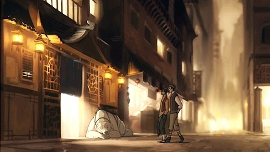
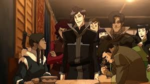
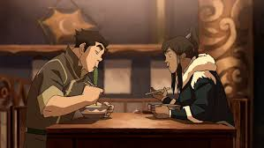
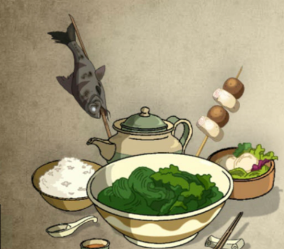

El interior del restaurante está profusamente decorado con auténticas reliquias, arte y tapices de la Tribu Agua,
aunque mantiene algunos toques modernos junto con los tradicionales. Estos diseños son principalmente de color
amarillo, con líneas, bordes y banderas azules en ciertas partes. El estilo artístico de estos diseños incluye
líneas rectas o irregulares y remolinos. Se puede encontrar una ventana en una pared lateral del restaurante,
aunque a menudo está cerrada durante la noche. Las mesas y los asientos del edificio, de los cuales hay
tres filas, tienen forma cuadrada y están hechos de madera marrón o dorada.



